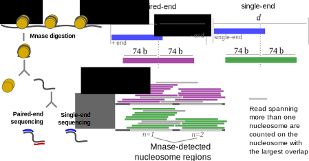

The following walk-through assumes you have:
The first step is to use Mnase-seq data to determine the nucleosome positions. We recommend to use DANPOS which can be installed following these instructions.
Once installed, use DANPOS to call nucleosomes:
python /path_to_danpos/danpos.py mnaseData.bam -o danpos_mnaseData
DANPOS will create a folder called danpos_mnaseData where there is a file with extension xls containing the nucleosome positions along their statistics. We’ll use this on section 4, when we’ll count the number of Mnased ChIP-seq reads per nucleosome.
We can’t use the Mnased ChIP-seq reads directly. We must correct their position to reflect their true genomic location. As shown in this figure:
After Mnased digestion, the ChIP-seq reads may be larger or smaller than the sequence necessary to wrap the nucleosome they are attached to. In the case of paired-end data, this can be easily solved by finding the middle point between mates, and subsequent adjustment of their length. For single-end data there isn’t a direct way to find this middle point, but it can be inferred based on the typical fragment size of the library. On both cases, once determine the middle point, the true area covered by each fragment is estimated by build extending the middle point +/- 74 nt. Although +/- 74 nt is a good guest (148 is the typical length of the DNA needed to wrap a nucleosome) you may want to specify a different length. To do this seamesly you can use the nucChIP script bam2bed.
Transform BAM reads to resemble the true position of a ChIP seq fragment.
usage: bam2bed [-h] [-b BFILE] [-l LTYPE] [-e EXTEN] [-o OFILE]
| -b | BAM file. Aligned single or paried-end ChIP-seq reads |
| -l=200 | INT. Library type: 0 if library is paired-end, fragment length is estimated from data; different from 0 if library is single-end, the value assigned here is used as fragment length. |
| -e=74 | INT. Half length of each read around their fragment midpoing. |
| -o | Output file. |